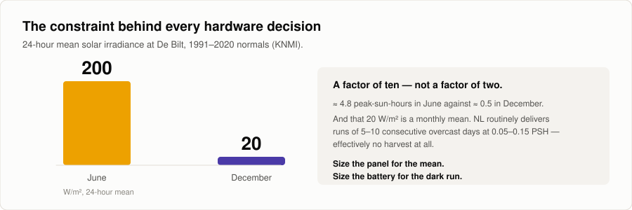

One Acre, Zero Dependency
Off-grid, AI-driven farming on two seasonal plots near Utrecht. One cultivated through summer, one through winter. A solar-powered field node reads soil and weather, and a laptop merges that with 125 years of Dutch records, forecasts its own solar budget, and asks a local LLM what to do today.
status: phase 0. Nothing is built yet. The plan is.

// overview
The question
How much of a small farm's daily decision-making can genuinely off-grid AI handle end to end, from sensor to scheduler?
That is the whole project. Two plots near Utrecht, one farmed through summer and one through winter. Hardware, code, training data and failures, documented in public through 2026 and into 2027.
What scoping it changed
The first version of this page said Raspberry Pi, soil NPK sensors, and a planting scheduler built on the biodynamic calendar. Scoping it properly killed all three.
A Pi cannot survive a Dutch December on a birdbox panel. The cheap NPK probes do not measure NPK. And the biodynamic calendar is a hypothesis, not a scheduling rule.
None of that made the project smaller. It made it honest.
// stack
AI-Homestead
The repo. Build plan, ADRs, data sources, and the figures on this page.
Original write-up
The first scoping document. Superseded by the build plan in the repo.
// commitments
Three things this project will not trade away
- 1 · Off-grid means off-grid. No cloud LLM in the daily loop. The scheduler runs on a laptop against a local model. The network pulls public historical data during setup and the occasional refresh. It is never a runtime dependency of a decision.
- 2 · Every number carries its provenance and its error bar. A €30 sensor that claims ±0.3 pH does not get to state pH to one decimal.
- 3 · The biodynamic calendar is a hypothesis under test, not a scheduling rule. The evidence does not support the trigon effect. This project computes it correctly, logs it as a covariate, and tests it against a pre-registered analysis. A null result is a valid output. Possibly the most valuable one.
// the field node
Why it is a Pico, not a Pi
De Bilt averages about 200 W/m² over 24 hours in June, and about 20 in December. A factor of ten.
{kind=link}

A Pi Zero 2 W idles at 0.4 to 0.6 W and still draws around 50 mA when halted. At half a peak-sun-hour in December that means roughly a 60 W panel and 100 Wh of battery. A caravan installation bolted to a birdbox.

The Pico 2 W wins on a mechanical detail more than on the chip. VSYS accepts 1.8 to 5.5 V, so a single LiFePO4 cell drives it directly. No boost stage, so no boost-converter quiescent current. Roughly sixty times smaller daily budget. A Pi still has a place in this project. It just is not in the field box.
The trap worth repeating: a charge controller's own quiescent current can exceed a well-designed node's entire consumption. One popular solar power manager draws under 30 mA idle, which is 3.6 Wh a day, or fifteen to forty-five times the whole Pico budget. Pick the power path before you pick the MCU.
What the hardware can honestly measure
Three of the sensors people reflexively buy for this build do not measure what the product page says.
The NPK channels are fabricated. The cheap 7-in-1 RS485 soil probes measure bulk electrical conductivity and multiply it by three fixed constants. The vendor states this in their own literature. So N, P and K are three scaled copies of one number and they move together. Add urea and watch phosphorus "rise". Buy the probe for moisture, temperature and EC, which are real and genuinely useful, and send soil to a lab twice a year for actual fertility. That costs about what the sensor costs and produces numbers that mean something.
Continuous in-soil pH is not achievable at this budget. The same soil reads about 1.5 pH units higher going from dry to field capacity, the relationship depends on soil type, and below roughly 11% moisture the readings stop being trustworthy. A lab-grade probe is around €100 with a two-and-a-half-year life, plus a carrier board, and it needs its glass bulb permanently hydrated, which a July soil will not do. Do pH the boring way: a sample indoors, 1:5 soil to CaCl₂, a calibrated bench meter, twice a year.
Capacitive soil moisture is a relative index, not %VWC. Fewer than 400 raw counts across the entire dry-to-saturated span, and the analog front end is the limit, not the ADC, so a 16-bit converter would not help. Add strong temperature cross-sensitivity, an onboard regulator that goes out of spec below 3.4 V, which is exactly where LiFePO4 lives, and an ink mask that fails within a year unless it is epoxy-potted. Log soil temperature next to every moisture probe and regress it out.
Two are unambiguously good. DS18B20 waterproof soil temperature at 10 cm and 30 cm, where the phase lag between the two is genuinely informative and costs €6. And the passive reed weather meters, rain, anemometer and vane, which draw zero standby current. Debounce the rain reed in software or you will inflate rainfall totals by 10 to 30% and never notice.
Two configuration traps that produce plausible-looking wrong data. A BME280 in continuous mode with high oversampling heats itself and biases its own temperature reading by one to two degrees. Use forced mode, one reading a minute, sleep in between, which is what the power budget wants anyway. And an unshielded sensor in the sun is not measuring air temperature: it errs by up to 3 °C, and poor airflow compresses the diurnal range rather than shifting it, which looks plausible and is therefore worse than a constant offset.
How the node goes together

Two failure modes will kill the node before any sensor does.
Condensation. A sealed box breathes. It warms in the day and pushes air out, cools at night and sucks damp air back in through every imperfection, and over weeks it pumps itself full of water. A tighter seal makes this worse. In the Dutch climate this is a certainty, not a risk. Fit a Gore-type ePTFE pressure-equalisation vent, add indicating desiccant, conformal-coat the boards, put every gland and the vent on the underside, and drip-loop every cable. Three euros, and the highest-value three euros in the build.
Cold charging. Never charge LiFePO4 below 0 °C. Lithium plates on the anode: one to five percent permanent capacity loss per event, irreversible, with dendrite risk. Plenty of cheap 1S BMS boards do not implement a low-temperature charge cutoff. Verify the datasheet or add an NTC and a MOSFET yourself, then test it in a freezer. Dutch frost mornings are also the clear sunny ones, so the correlation works against you. Bury or insulate the cell: soil at 30 cm barely drops below 3 or 4 degrees.
Print the radiation shield in ASA or PETG, not PLA, which loses real strength outdoors within a month. Use the wooden birdbox as the decorative rain-and-sun shell and put a proper IP66 box inside it. The air gap between the two buffers thermal swings nicely.
The link, measured before it is chosen

BLE's limit here is not throughput. The payload is about 10 bits per second against a 235 kbps floor. The problem is the failure mode: a dropped connection fails silently with no retry, so you lose data during exactly the weather events the station was built to observe.
Under 20 m of clear line of sight, BLE is fine. Twenty to fifty is marginal: it works in July and drops out in a wet November. Beyond that, LoRa. So the decision waits on a tape measure. Either way, BLE stays as the walk-up service interface, because that role it does excellently and it is nearly free.
ingest/ is the seam. Swapping BLE for LoRa touches one module and nothing downstream. That is the entire reason for the layering.
// data
Weather, and 125 years of it
KNMI's script service gives De Bilt, station 260, about 6 km from Utrecht, daily from 1 January 1901, with global radiation and reference evapotranspiration included. No API key. That is the ground truth.
Open-Meteo adds what a weather station cannot measure: ERA5-Land back to 1950 for soil moisture and temperature at depth, KNMI's own Harmonie AROME at 2 km for the forecast, and satellite-observed irradiance projected onto the panel's actual tilt and azimuth, which removes a whole transposition step from the PV model. PVGIS sizes the system once and is then put away.
Four traps, all of which produce silently wrong data. KNMI values are integer-scaled, and a -1 in humidity or sunshine means "less than 0.05", not minus one. KNMI's EV24 is Makkink and Open-Meteo's et0 is FAO-56 Penman-Monteith, so they will never agree and must never share a series. The Open-Meteo archive and forecast use different soil depth bins, so they cannot be concatenated without an explicit mapping step. And KNMI states plainly that its station series are unsuitable for trend analysis: fine operationally, wrong for climate trending.
// the calendar
The Thun calendar, done honestly
First, it is not Steiner's calendar. The Agriculture Course of 1924 contains the farm-as-organism idea and the numbered preparations. It contains no root, leaf, flower and fruit scheme and no constellation-to-organ mapping. That came from Franz Rulni in the late forties, and then from Maria Thun, first published in 1963. Thun's radish trials actually began as an attempt to test Rulni's claims. Calling it the Thun calendar costs nothing and keeps the credibility.

Every figure here was computed from the ephemeris, at thirty-minute steps across 2026 to 2036, rather than copied from secondhand sources. Doing that corrected a widely repeated claim: the commonly quoted "Libra is as short as 18°" is wrong. Scorpius is the short one, at 0.68 days against Virgo's 3.30.

It is sidereal, not tropical. The calendar tracks the Moon against the actual star constellations. Tropical astrological signs are currently offset by 24 to 25 degrees, which is roughly a whole sign. Get this wrong and every day type is wrong.

Real IAU boundaries are unequal in length, so the day types are structurally unbalanced. 2027 works out at 107 root days against 67 flower days. Any analysis has to weight for that, or it will find an effect that is just the calendar's own shape.

Ascending and descending is declination, a 27.3-day cycle, completely independent of the 29.53-day waxing and waning cycle. Confusing the two is the second most common bug in hobby implementations. On top of that, node crossings, eclipses and perigee are blanked out with a window of hours either side.
Two gotchas only appear once the implementation is correct. Real IAU boundaries put a slice of the ecliptic in Ophiuchus, where the Moon spends about 1.27 days per sidereal month, but Thun's zodiac is twelve-fold. Fold it into leaf, but flag it in the output. And because the Moon's orbit is inclined about five degrees, it spends roughly a day a month in Orion, Sextans, Cetus, Auriga and even Corvus. Return nothing and log it. Never crash, never silently default.
The evidence, stated plainly
The specific claim, that the Moon's position against a constellation at sowing measurably changes yield in the corresponding plant organ, is not supported.
Hartmut Spiess ran systematic radish trials from 1977 to 1986 at the Institute for Biodynamic Research, from inside the tradition, and failed to verify the trigon effect. Mayoral and colleagues put it flatly in 2020: there is no reliable, science-based evidence for any relationship between lunar phases and plant physiology. The physics is unkind too. Lunar tidal force on a two-metre organism is about a thousand times smaller than that of a one-kilo mass sitting a metre away. The one favourable review is a contested reanalysis of Spiess's own data by a non-neutral author.
Separately, and honestly: there is credible plant science on moonlight as a weak photoperiodic cue. That is evidence about photons, not constellations, and the first should not be used to launder the second.
So the calendar is a logged covariate and never a hard constraint. The scheduler may surface "today is a leaf day" as context. Every planting records its day type. Over seasons it gets tested, from an unusually good position, because the weather pipeline supplies exactly the covariates the historical trials lacked. The analysis is pre-registered and frozen before the first sowing. And there is no open licensed dataset of Thun days to validate against, so validation is done the slow way: one printed edition, sixty to ninety days hand-keyed, kept out of the repo.
// models
Forecasting the sun, not the clock
Predict tomorrow's harvestable energy and the resulting battery state, so the power-hungry work gets scheduled into the sun instead of into a fixed cron slot.
Start with the baselines you have to beat: persistence, meaning tomorrow equals today, and a clear-sky-index model. Report all skill relative to those. An LSTM that cannot beat persistence is a finding, and an honest one. Walk-forward validation only. A random split on a time series leaks the future and produces flattering nonsense.
The honest constraint is one winter of data. An LSTM on ninety days of a strongly seasonal signal will overfit. Either pre-train on reconstructed history at these coordinates and fine-tune locally, or accept that a physical model plus a small residual regressor beats a data-hungry network here, and log that as the result. Do not report a deep model as better than it is because it was more fun to build.
The LLM proposes, Python disposes
A local model on the laptop, Qwen or Llama class, sized to the hardware. That keeps the off-grid claim honest and costs nothing per call.
The LLM never computes. Every number, degree-days, soil moisture deficit, frost risk, day type, PV budget, is computed in tested Python and handed over as a structured context block. The model's only jobs are selection, prioritisation and explanation. Ask a language model to do arithmetic on sensor data and it will produce confident, plausible, wrong numbers.
Output is schema-validated JSON: action, crop, plot, window, rationale, confidence, and the inputs it used. That last field is what makes a recommendation auditable three months later. A deterministic constraint layer runs after the model and can veto or defer. Frost tonight. Soil too wet to work. Water budget spent. Bed already planted.
Every output records the prompt hash, so when the advice changes you know whether the world changed or the prompt did. The daily brief lands in a dated markdown file. And when you disagree with a recommendation, you write down why, in a file that is the actual research output of this project.
// roadmap
Ten phases, and what "done" actually means

Nothing is done because code exists. Every phase has a done-when you can actually check.
| Phase | Done when |
|---|---|
| 0 · Repo and site survey | ADRs decided, real coordinates and a measured link distance written down, tests exit clean |
| 1 · Bench node | A complete plausible reading every 60 seconds for an hour with no exception, and ten manual bucket tips read exactly ten |
| 2 · The link | Bluetooth off for 20 minutes, back on, and every reading from the gap lands in the database with the right timestamp |
| 3 · Power and deployment | Fourteen days outdoors with no gaps and no intervention, then fourteen more spanning a genuinely overcast week |
| 4 · Calibration | A raw row becomes a physical row, and every channel has a defensible error bar written next to it |
| 5 · Weather and history | A continuous backfilled series with an explicit gap report, and local readings visibly overlaying De Bilt |
| 6 · Biodynamic engine | Ophiuchus folds and is flagged, strays return nothing, and validation mismatches cluster on the three known causes |
| 7 · Solar forecast | Next-24h watt-hours with a stated interval, and a model card reporting skill against both baselines on a walk-forward split |
| 8 · LLM scheduler | Seven consecutive dated briefs, each traceable to its inputs, and at least one logged disagreement |
| 9 · Vision and anomalies | Item counts from shelf photos. Gated behind a full season of data. |
Phases 0 to 3 are sequential. Phase 5 needs no hardware at all, so it starts on the first rainy evening while the parcels are still in transit.
What will probably go wrong
- BLE is unreliable at the real distance. Silent data loss in bad weather. Measured in Phase 0, and the ingest seam makes LoRa a one-module change.
- Condensation kills the node. Near-certain without a vent. A dead node in February, for the sake of five euros of vent, desiccant and coating.
- The data is plausible but wrong. Self-heating, no radiation shield, reed bounce. This is the default outcome, and it costs months of confidently wrong analysis. Four bench tests in Phase 1, cross-checked against De Bilt in Phase 4.
- The LSTM overfits one winter. An impressive model that forecasts nothing. Baselines first, walk-forward only.
- The LLM does arithmetic. Certain if allowed. All numbers in Python, every time.
- Scope creep into the vision side, because it is the fun part, and then the core loop never closes. Phase 9 is gated behind a full season. Hold the line.
MIT for the code. Weather data from KNMI and Open-Meteo (CC-BY-4.0). Ephemerides from JPL via skyfield. No copyrighted calendar data is redistributed.